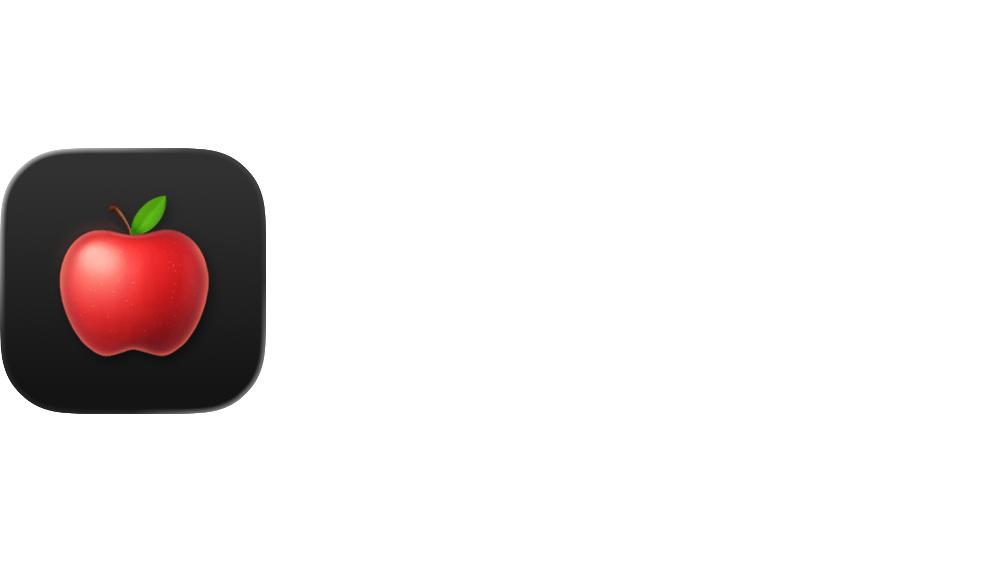

"OSU Rooms" is a project I created for the 2025-2026 Winter Term Term-Long GDGC Hackathon. It is an app that lets users see classrooms/labs/lecture halls they may have used at OSU and rank their overall experience with them.
Status: Work In Progress
Date Started: Jan 5, 2026
Total Commits: Around 115

"Cookie Clicker" is a project I when trying out the capabilities of Google's Antigravity. it is basically a modern recreation of the classic cookie clicker browser tycoon game but it also has many (20+) themes that the player can pick from. Antigravity (with Gemini) worked really well writing the code in which I told it to but had lots of trouble with complex asks and sometimes would replace already written code breaking the site which I would have to fix myself or ask it 10 times until it would produce something correctly.
Status: Work In Progress
Date Started: Nov 24, 2025
Total Commits: Around 37

"Delete Photos" or "Swipe Delete" is the first IOS app I've made. I saw many ads for apps that would let you pick which photos to delete and keep from your camera roll. I wanted to use one but I knew most of them would be filled with ads or be paid so I decided I would make an open source one without any of those issues.
Status: Work In Progress
Date Started: Oct 26, 2025
Total Commits: Around 14

"DarkMode Sites" is my first website and big project I have worked on. I started it back in August of 2021 and have since updated it periodically. It's basically a cool and visual list of applications, websites, and extensions that have DarkMode. I first created it because I had gone to darkmodelist.com and found that it had a pay wall for additions and it made me angry. It originally was called "DarkMode sheets" but I rebranded it when I wanted to make a custom domain and found that darkmodesheets.com was taken.
Status: Work In Progress
Date Started: Aug 3, 2021
Total Commits: Around 607

A site where you can download the "MacOS Tahoe App Icons" I made for apps & websites that haven't updated them yet.
Status: Work In Progress
Date Started: Sep 17, 2025
Total Commits: Around 5

Frustrated about how amazon puts their own branded products at the top of the search results, I decided to create a browser extension that would let the user hide certain brands from appearing when searching on amazon. This extension is fully supported on chrome and firefox.
Status: Work In Progress
Date Started: Sep 6, 2025
Total Commits: Around 5
This is the newest project I've been working on. I found that I wanted to track how many times I did something daily. So I created this, a very customizable daily tracker where all of the data is stored locally on the browser and each value's data resets daily.
Status: Work In Progress
Date Started: Aug 10, 2025
Total Commits: Around 24

Just something cool I decided to make. It's basically a website where you can make custom emojis.
Status: Work In Progress
Date Started: Sep 22, 2021
Total Commits: Around 58
This was really my very first thing I have ever coded other then things on scratch. At the height of the DaBaby meme in 2021, I was fascinated by Discord bots and discord.js so I decided to create a discord bot about DaBaby. As I wasn't 18 yet, It never blew up because by the time I was able to verify it, the meme was dead.
Status: Discontinued
Date Started: May 3, 2021
Total Commits: Around 60